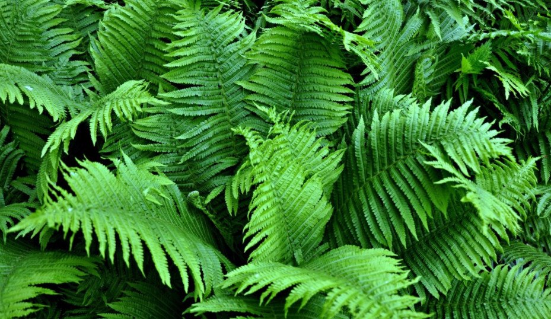

Папороті
Папороті - група судинних рослин. Здебільшого це багаторічні (рідше однорічні) трави, інколи дерева із самостійним гаплоїдним та диплоїдним поколіннями з переважанням у циклі розвитку спорофіту.
Загальні відомості
Папороті з'явилися на Землі приблизно 360 мільйонів тому в середньому девоні (палеозойська ера). Вони були справжніми гігантами і формували рослинний покрив планети. Папороті утворювали цілі ліси. Зараз деревовидних папоротей на Землі залишилося мало. Сучасні папороті набагато менші за розмірами від тих, котрі існували у попередні геологічні періоди.
Опис
Спорофіт представлений рослиною із стеблом, листками (вайями) та додатковими коренями. Папоротеподібні не мають справжнього листя; вайї перисторозсічені, рідше прості або пальчасті, завдовжки від 2-4 мм до 30 см. Коренева система первинно гоморизна.
Гаметофіт папоротей часто називають заростком. Він має вигляд невеликої пластинки або стрічки, живе недовго — від кількох тижнів до року
Розмноження
Розмножуються спорами, які містяться в спорангіях. Спорангії розміщуються на листках купками в сорусах або зростаються між собою в так звані синангії, або містяться в спорокарпіях.
Статеве покоління — гаметофіт, що виростає із спори. У різноспорових папоротей роздільностатеві гаметофіти дуже редуковані. Запліднення відбувається у воді, під час дощу або роси.